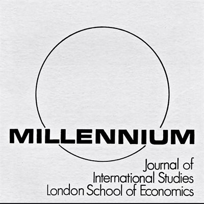

收录于合集

编者按
国际关系英国学派的代表性人物巴里·布赞在本文中对“文明标准”——被英国学派首次应用到国际关系分析中的概念——进行了综述。布赞认为这一概念的分析价值被大大低估了，因此他在文中详细介绍了该概念的历史起源与含义、在英国学派历史分析中的运用、这一概念的当代实践以及它对于国际关系分析而言的持久适用性，对于重新发现“文明标准”这一概念在英国学派理论中的地位和价值具有重要意义。
作品简介
【作者】 巴里·布赞（Barry Buzan），英国社会科学院（Academy of the Social Sciences）院士（2001年至今）、伦敦政治经济学院国际关系系名誉退休教授（前蒙巴顿波顿讲席教授）、哥本哈根大学、吉林大学以及外交学院的名誉教授。布赞曾是英国国际关系学会的主席（1988-90年），北美国际关系学会副主席（1993-94年），国际关系学协调理事会创立干事；国际关系学英国学派总召集人（1999-2011），《欧洲国际关系学杂志》（European Journal of International Relations）的编辑（2004-2008）。他的研究兴趣主要集中在国际关系理论（尤其是英国学派）、国际安全（尤其是哥本哈根学派）、世界历史中的国际体系变迁等。
参见：
http://www.lse.ac.uk/international-relations/people/buzan
【编译】 施榕（国政学人编译员，北京大学国际关系学院）
【校对】 陈 勇
【审核】 周玫琳
【排版】 赵怡雯
【来源】 Barry Buzan, “ The ‘Standard of Civilisation’as an English School Concept,” Millennium: Journal of International Studies , Vol. 42, No. 3, 2014, pp. 576-594.

期刊简介

《千禧年：国际研究杂志》是一份在1971年由学生创办的同行评议期刊，旨在发表国际关系研究领域最具创新性的文章。它的总部位于伦敦政治经济学院，每年出版三期，根据2018年Journal Citation Reports显示，它的影响因子为1.684，在91个国际关系类期刊中排名第30（30/91）。
“文明标准”：一个英国学派的概念
The “Standard of Civilisation” as an English School Concept
内容提要
“文明标准”源于人们在文化上广泛使用的“文明人”和“野蛮人”的比喻。它的具体现代形式出现在19世纪，主要是作为一个欧洲法律术语。判断何为“文明标准”的具体标准从未被明文规定下来，但普遍的做法是由在欧洲盛行的当代政府形式来定义。它的政治作用是对国际社会的成员资格进行把关，并为殖民主义辩护。1945年之后，当自决权为几乎所有的民族打开了加入国际社会的大门时，“文明标准”这一术语也随之瓦解了。在英国学派的文献中，“文明标准”被用来讲述西方国际社会扩展的历史故事，并批评该学派对殖民主义的忽视。它与当代英国学派文献之间的联系主要涉及到：（1）人权、民主、资本主义和环境保护主义是否被用来构建新的“文明标准”，并通过附加条件和其他歧视性做法加以实施；（2）将“较不发达”的人民提高到满足“文明标准”的殖民义务与1945年后向“较不发达”人民提供援助和发展的义务相联系。因此，英国学派关于“文明标准”的概念既在政治上令人耳目一新，又与思考国际关系有着持久的相关性。
文章导读
01
简介
使用“文明标准”一词对国际关系进行分析是英国学派的开创性贡献，但英国学派并没有对这个术语进行详细的介绍。布赞认为英国学派不仅应该在其历史著作中，而且要在其对后殖民世界的分析中提高“文明标准”这一术语的地位。在观察1945年以前的国际社会时，使用这个概念是没有问题的，因为“文明标准”在当时是被普遍使用的。但在1945年后还使用这一概念就可能会被认为是尴尬的或不合适的，因为它与殖民主义有很强的联系。然而，可以肯定的是，西方殖民式国际社会中的一些实践在当代世界政治中仍然普遍存在。这些实践虽然不再打着”文明标准”的旗号，但它们通常被更温和和更官僚主义的术语所包装，如“制约条件”、“善治”和“发展”。布赞的观点是英国学派应该有勇气坚持使用原来的术语以此来强调这些实践的连续性。“文明标准”是一个强大的分析概念，其适用范围远远超出过去两个世纪的历史，不应该被政治正确的面纱所掩盖。下一节将探讨这个概念在西方殖民时期的起源和含义，再下一节将讨论英国学派在历史分析中是如何使用这个概念的。最后一节讨论了这一概念的当代实践以及它对分析国际关系的持续相关性和实用性。
**
**
02
概念的起源与含义
“文明标准”这一概念在西方以外的许多社会都有很深的根基。它建立在“文明人”和“野蛮人”之间的区别上，这在大多数文明中都很常见。这种区分可以作为一种文化等级（在这种情况下通过习得高雅文化可以向上流动），也可以作为一种种族主义等级（在这种情况下，优越感/自卑感在生物学上被刻划）。这一概念在“文明的”人和“未开化的”（“野蛮的”或“粗鲁的”）人之间拉开了一个地位差距，并将前者对后者在政治、法律和文化上提出更高的要求合法化。
因此，在19世纪，“文明标准”支撑起了部分对“野蛮人和文明人”的种族主义分类，这种分类将非欧洲世界与欧洲联系起来，成为进入欧洲乃至后来西方国际社会的标准。因此，国际社会的扩张是以两种不平等的方式进行的：一种是将大部分非西方国家吸纳进欧洲帝国版图中，另一种是在一些非殖民地国家被认为达到“文明标准”后，分阶段地接纳它们进入国际社会。当19世纪欧洲与世界其他地区拉开巨大的实力差距后，“文明标准”的使用变得更加显著。这个概念主要是在外交和国际法的实践中发展起来的。
从某种意义上说，“文明标准”代表了西方崛起的一个特定阶段。欧洲国际社会的扩张需要身份的改变：从初始阶段的“基督教世界”开始，然后在19世纪早期转向“西方文化”以整合美洲和其他欧洲文化的分支，最后在19世纪后期转向“文明标准”。从某种意义上说，从基督教到“文明”的转变标志着欧洲国际社会身份认同的排外性有所降低。当国际社会被认为完全是基督教社会时，像奥斯曼帝国这样穆斯林占多数的国家自然不在其范围之内。然而，这种“文明”观念的转变是基于某个政体的“现代”能力意味着，在理论上，国际社会可以是普遍的。这是为什么在漫长的19世纪里奥斯曼人、埃及人和日本人都采取了现代化的改革，以期能获得国际社会里的平等成员资格。如唐纳利（Jack Donnelly）所指出的那样，国际社会可以被视为开放的（因为尽管它起源于欧洲，但如果满足特定的条件，其他国家也可以加入），也可以被视为帝国主义的（表面上是多元化的但实际上却需要广泛的西方化）。基恩强调1945年以前的殖民主义和帝国主义是分裂主权的象征，即中心区的国家之间主权平等，但对边缘国家实行分裂主权和“文明标准”。他认为，“我们需要认识到文明概念的重要性，它不仅是新国家进入国际社会的一个标准，而且是认可一套完全不同的法律规则和政治制度的标准。
支撑“文明标准”的另一个因素是，在19世纪西方的思想和实践中，实证法对自然法的支配地位日益增强。自然法使人类在上帝面前一律平等，为文明的跨文化交流提供了某种基础。实证法将国家对内的管理与它们在国际社会中的地位联系起来。这样，实证国际法就成为“文明的”欧洲国家的法律，为分割主权铺平了道路。例如，19世纪战争法的编纂将国际社会的内部和外部区分开来，前者受制于决定合法暴力范围的规则，而后者被认为是不受这些约束的。这种分层的结果是西方国家和人民享有特权，而以前被视为主权国家的非欧洲国家，现在充其量被视为加入欧洲国家主导的国际社会的潜在候选人。
尽管“文明标准”成为支撑19世纪欧洲殖民国际社会的关键概念之一，但它从未拥有一套明确的（判断）准则，主要以西方领先国家的管理实践来衡量。这包括法律、财产权、个人权利、宗教权、外交实践以及创造和部署现代技术和基础设施的能力。实际上，“文明标准”与现代性相关。问题在于随着现代性的多种革命（工业革命、社会革命、政治革命、经济革命）不断开展，现代性的所有这些组成部分在欧洲内部都在经历着迅速的变化。进步（progress）曾经是（现在仍然是）现代性的中心主题，在19世纪，四种“进步的意识形态”（ideologies of progress）——自由主义、社会主义、民族主义和“科学”种族主义——主导了国际社会的思想图景。这些不断发展的意识形态连同工业主义一起与“文明标准”紧密相连，帮助定义了“野蛮人”。只要现代性不断发展，判断满足“文明标准”的准则也将不断改变，可能会变得越来越苛刻。
03
“文明标准”在英国学派历史分析中的运用
在英国学派的文献中，“文明标准”这一术语的使用主要与那些能抵抗殖民统治的政体在遭遇欧洲国际社会扩展时的故事有关。这些政体需要以某种方式适应欧洲主导的国际秩序，比如中国、日本、奥斯曼帝国、埃及、俄罗斯、暹罗等。在“文明标准”的范围内，帝国内部的殖民地之间也是有区别的。英国学派里关于”文明标准”的关键著作是江文汉（Gerrit W. Gong）所著的《国际社会中的文明标准》（The Standard of “ Civilization” in International Society）。江文汉认为，欧洲国际社会的扩展引发了一系列关于如何管理拥有不同能力的政体之间的互动的问题。外交和商业都需要一套确定有效的政府标准，特别是满足法律所规定的相互义务的能力。江文汉在一定程度上探讨了“文明标准”的性质和运作。霍尔斯蒂（Kalevi J. Holsti）则记录了这一标准自19世纪到1945年之后的演变。19世纪的西方殖民主义国际社会基本上是一个双重结构：西方核心国家之间主权平等，而外部国家则受制于西方所定义的准入标准，这涉及一些在法律、财产权、人权和善治等问题上的制约条件。虽然少数非西方国家加入了国际社会，但这一双重结构一直存在，直到帝国主义/殖民主义作为国际社会的一种首要制度在第二次世界大战后瓦解。
因此，关于非西方国家遭遇西方国际社会扩展的叙事，经典英国学派的视角主要局限于少数案例。美洲早期的非殖民化几乎没有造成什么问题，因为新移民国家是欧洲文化的分支，因此很容易被接受为“文明人”。最引人注目的四个案例是俄国、奥斯曼帝国、中国和日本。俄国算得上是半个欧洲国家，并且在18世纪早期已经融入了欧洲国际社会。许多世纪以来，奥斯曼帝国一直是欧洲的异类，但在这期间的大部分时间里，它也与欧洲的均势密切相关。这意味着奥斯曼帝国的遭遇与后来涉及欧洲扩张的故事有着不同的性质。日本为非西方国家迅速成功地适应“文明标准”提供了范例，它在1899年之前被国际社会接受，此后不久就成为一个大国。但是日本的故事也有一些有趣的转折，比如1919年日本在巴黎和会上没有得到西方对种族平等的承认。中国与“文明标准”的斗争要漫长得多，事实上，与土耳其一样，这场斗争仍在继续。
第二次世界大战期间，西方人对彼此层出不穷的野蛮行径使得以“文明标准”为依据的殖民统治失去了合法性，并为在先验自决权基础上的大规模非殖民化开辟了道路。但这又造成了失败国家和人道主义干预的问题，使对主权的承认具有了某些制约条件。正如马丁·怀特所观察到的那样：在一个强大的、更发达的中心（国家）应该如何与一个较弱的、较不发达的边缘（国家）联系起来的问题上，“文明标准”支持了两种截然不同的逻辑。在现实主义的逻辑中，这种中心- 边缘的差异允许（中心区国家）征服、剥削甚至灭绝“野蛮人”；而在理性主义的逻辑中，这种差异则指向了“文明人”所肩负的指导“野蛮人”达到“文明标准”的家长式义务。
04
“文明标准”的当代实践与前景
尽管“文明标准”一词在1945年后不再使用，但与它相关的实践仍以各种方式继续着。比如斯蒂瓦兹（Yannis A. Stivachtis）将人权、国际法和现代性的一般标准作为“文明标准”的接替。费德勒（Fidler）认为“文明标准”作为国际法发展的推动力，对它的否定很大程度上停留在表面。“文明标准”的实质仍然存在。它通常仍然与成员资格相关，尽管现在更常指的是特定组织的成员资格。因为各国现在都在国际社会中，“文明标准”主要存在于西方国家允许谁加入某个国际组织的问题上。国际社会可能已经具有普遍性，但在这一进程中，它已变得更有层级性，其中的区域差别也更多。它仍然包含主要根据西方现代性标准所定义的地位等级，并且与殖民时代一样，这些标准随着现代性的前沿（包括技术和行为）发展而不断变化。就像经典的“文明标准”一样，新的标准致力于区分更“文明”的国家和不那么“文明”的国家。这些构成新“文明标准”的带有制约条件和歧视性的当代实践包括：人权、民主、资本主义、环境保护和发展。
因此，自上世纪90年代以来，“文明标准”一词即便没有重新出现，至少也出现了“文明人”（civilised）对比“野蛮人”（barbarian）的比喻。鲍登（Brett Bowden）展示出围绕着失败国家的话语和恐怖主义已经使“文明标准”卷土重来,并指出:“如同经典标准一样,当前对“文明”的衡量主要围绕着非西方国家的治理能力以及它们与西方国家的友好关系。“文明标准”在多大程度上与西方/非西方这样的二分框架相联系——就像两个多世纪以来的那样——是一个有趣的问题。“文明标准”的经典版本和新版本都是现代性的产物。在此基础上，人们可能会认为，随着现代性革命的蔓延，西方主导的时代即将结束，一个权力在全球更为分散的时代正在出现。在这样一个世界里，一个文明不太可能为其他文明设定标准，一小部分国家也难以主导其余的国家。随着“发展”变得越来越普遍，留给建立在现代性所定义的“文明标准”基础之上的歧视和等级制的空间可能会越来越小。然而，现代性本身已经被证明能够产生不同的路径（自由主义、法西斯主义、社会主义、共产主义）。显然，中国、俄罗斯和印度等主要国家仍在以自己的独特方式追求现代性。因此，在自由主义者和其他人之间，很可能会有关于现代性的标准之争，或者可能会有一个更宽松的全球标准，带有一定程度的地区差异和多元主义的宽容。
但作为国际关系实践的“文明标准”，无论采用何种修辞形式，都不太可能消失。它在从西方殖民式国际社会向全球性国际社会的转变中幸存了下来，是一个经久不衰的概念。布赞认为，在分析国际关系时应该比现在更多地使用和重视它。它具有令人耳目一新的坦率和分析上的洞察力，旨在揭露自由主义和其他类型的规范普遍主义（normative universalism）的虚伪。
评述
本文是当代英国学派的领军人物巴里·布赞所发表的一篇类似于综述性质的文章，他在文章中对“文明标准”这一英国学派的关键概念进行了梳理, 并认为这一概念在分析上的重要性被低估了。事实上，“文明标准”与英国学派的另一概念“首要制度”（primary institution）密切相关，而后者在二战后的英国学派文献里被更多地讨论，有时还存在两者混用的状况。很遗憾的是，虽然布赞在这篇文章里不断提到了“首要制度”，但是并没有专门对二者进行辨析。在布赞发表本文之后，英国学派对“文明标准”的研究往前迈了一大步，最新的研究成果有 Joanne Yao 于2019年在European Journal of International Relations上发表的“‘Conquest from barbarism’: The Danube Commission, international order and the control of nature as a Standard of Civilization”一文。Yao的文章指出在19世纪对自然的控制和利用构成了加入文明化的欧洲国际社会的成员资格，成为了一种“文明标准”。除此之外，中国国内以张小明教授为代表的学者针对“文明标准”的研究则主要集中在中国遭遇西方“文明标准”时的反抗、斗争与适应性融入的过程。
本文由国政学人独家编译推荐文章观点不代表本平台观点

**** 添加 “ 国小政” 微信，获取最新资讯 ****
**
**

好好学习，天天“在看”
国政学人
支持学术公益与知识传播
微信扫一扫赞赏作者 __赞赏
已喜欢，对作者说句悄悄话
取消 __
发送给作者
发送
最多40字，当前共字
上一页 1/3 下一页
长按二维码向我转账
支持学术公益与知识传播
受苹果公司新规定影响，微信 iOS 版的赞赏功能被关闭，可通过二维码转账支持公众号。